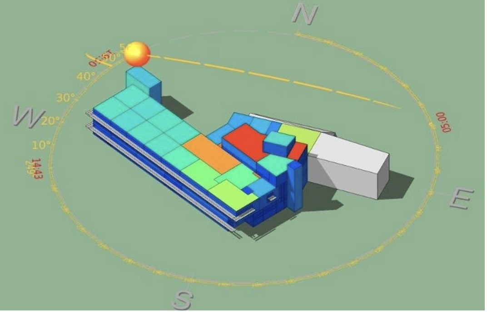

teaching
Courses taught and students mentored.

48-722 — Building Performance Modeling
Sole instructor of this graduate class at Carnegie Mellon University, Jan 2022 – May 2024. Designed the teaching materials and lab assignments; 15–30 students per offering, from mixed academic and professional backgrounds.
teaching assistantships
-
Fall 2020 – Fall 2021Carnegie Mellon University
48-768 Indoor Environmental Quality · 48-729 Sustainability, Health and Productivity · 48-722 Building Performance Modeling · 48-721 Building Controls and Diagnostics · 48-116 Building Physics
-
2013 – 2014University of California, Merced
Lab instructor and teaching assistant — ME 021 Engineering Computing · ME 140 Vibration and Control · ME 142 Mechatronics · ENGR 065 Circuit Theory